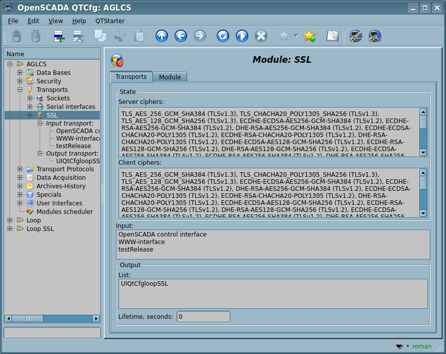

| Module |
Name |
Version |
License |
Source |
Languages |
Platforms |
Type |
Author
|
| SSL |
SSL
|
4.5 |
GPL2 |
tr_SSL.so |
en,uk,ru,de |
x86,x86_64,ARM
|
Transport |
Roman Savochenko
Maxim Lysenko (2009) — this page initial translation
|
| Description
|
Provides transport based on the secure sockets' layer. OpenSSL is used and supported SSL-TLS depending on the library version.
- Sponsored by, for an external certificates file on 0.3 HD[!]: Vinnica Poultry Farm
|
The module provides to the program support for the Secure Sockets Layer (SSL) based transports. The module is based on the library OpenSSL. Input and output SSL-TLS transport protocols are supported, the general list of which is dependent on their availability in the OpenSSL library and the most relevant and safe is selected.
You can add new input and output safe sockets through the configuration of the transport subsystem in any OpenSCADA configurator.
On new SSL-versions the "Transports" tab of the module is appended by information of the common-context ciphers for input-server and output-client parts differently, see Figure 1.
 Fig.1. The "Transports" tab with SSL ciphers.
1 Input transports
Configured and running input transport opens server SSL-socket for the expectation of connection of the clients, besides the initiative connections. SSL-socket is multi-stream, i.e. when the client connects, the client socket and the new thread are created in which the client is served. Server socket in this moment switches to the waiting for the request from the new client. Thus the parallel service of the clients is achieved.
Each input transport is associated with one or several available transport protocols, to which input messages are transmitted. Together with the transport protocols, the mechanism of combining fragmented pieces when sending requests is supported.
Read about the passive acquisition mechanism and initiative connections you can in the corresponding part of the "Data acquisition in OpenSCADA" document.

Fig.2. The generic configuration dialogues of the input SSL-transport.
Using the main dialog you can set:
- State of the transport, that is: status, "Connect", name of the storage (containing the configuration), a list with information about the active connections and supported ciphers.
- Identifier, name and description of the transport.
- Address of the transport in the format "{addr}[:{port}[,{port2}[,{portN}]][:{mode}[:{IDmess}]]]", where:
- addr — address to open SSL, it must be one of the addresses of the host. Empty or "*" address opens SSL for all interfaces. There may be as the symbolic representation as well as IPv4 "127.0.0.1" or IPv6 "[::1]".
- port, port2, portN — network ports on which SSL is sequential opened (at busy the first ones), indication of the character name of the port, according to /etc/services is available.
- mode – mode of operation:
- 0(default) — ordinal connection;
- 2 — initiative connection. Enables the mode of connecting this input transport to remote host (address instead of local) and switching to the listening state of this host. The "Keep alive timeout" value is used as the timeout of the re-connection of this transport in the absence of activity in order to restore the possibly lost connection.
- IDmess — identification message of the initiative connection — the mode 2.
- Selecting of the transport protocols.
- State "Connect", in which the transport must be switched at start up.
Using the additional dialog you can set:
- Priority of the transport tasks.
- System input buffer size in kilobytes of the socket. Set to 0 for disabling the user size. Actual size you can see in the status.
- Maximum segment size (MSS) in bytes, for limit the transmitted packages size (segments TCP) on bad link channels. Set to 0 for disabling the user limit for size. Actual size you can see in the status.
- PEM-file of the certificates and private key; or the certificates, private SSL key directly and password of the private SSL key.
 Hidden in the connected state.
Hidden in the connected state.- Is traced in 60 seconds for updating, then the transport reconnect for actualisation.
- [!INIT] Maximum number of clients, Maximum number of clients per host and Size of the input buffer.
- [!INIT] Keep alive requests. Closing the connection after the specified requests. Zero value to disable - not close ever.
- Keep alive timeout, seconds. Closing the connection after no requests at the specified timeout. Zero value to disable - not close ever.
- We do not recommend disable the function by the TCP/IP network's properties does not guarantee notice the server about the connection disable, for example after power supply lost on the client. As result the opened client connections will left forever and after their number achieve to the limit, server will drop new connections!
- [INIT|ASSOC] Timeouts, tries of the initiative connection and the associated output transports, empty for default and separated by '||'. Format of the timeouts and tries is corresponded to ones of the output transport.
- Protocols' specific custom parameters.
- Reset all the additional parameters to default values and cleanup the protocols' specific custom parameters.
2 Output transports
Configured and running output transport opens a connection to the specified server. In the case of destroying the connection, output transport is stopped. In order to resume the connection transport must be re-run, that all protocols do automatically.
The transport supports of direct definition of multiple server addresses and processing of all IP addresses in which the symbolic address is resolved, which allows you to build vertical redundancy directly by the transport that will be automatically connected to the first available server.

Fig.3. The generic configuration dialogues of the output SSL-transport.
Using the main dialog you can set:
- State of the transport, that is: status, "Connect", name of the storage, containing the configuration, and supported ciphers.
- Identifier, name and description of the transport.
- Address of the transport in the format "{addr}[,{addrN}]:{port}", where:
- addr — address with which the connection is made. There may be as the symbolic representation as well as IPv4 "127.0.0.1" or IPv6 "[::1]".
- port — network port with which the connection is made. Indication of the character name of the port according to /etc/services is available.
Using the additional dialog you can set:
- PEM-file of the certificates and private key; or the certificates, private SSL key directly and password of the private SSL key.
- Hidden in the connected state.
- Connection timings in the format "{conn}:{next}", where:
- conn — maximum time of waiting the connection, in seconds;
- next — maximum time of waiting for continue the response, in seconds.
- Can be prioritatile specified into the address field as the second global argument, as such "localhost:123||5:1".
- Attempts of the requesting both for this transport and protocol, for full requests.
- Can be prioritatile specified into the address field as the third global argument, as such "localhost:123||5:1||3".
- Maximum segment size (MSS) in bytes, for limit the transmitted packages size (segments TCP) on bad link channels. Set to 0 for disabling the user limit for size. Actual size you can see in the status.
- Protocols' specific custom parameters.
- Reset all the additional parameters to default values and cleanup the protocols' specific custom parameters.
3 Certificates and keys
For the full function of the module, you need certificates and private keys. In the case of input SSL-transport (server), they are mandatory. In the case of the output SSL-transport, they may not be installed, although their using is desirable.
The simplest configuration of the certificate is self-subscription certificate and private key. The following describes how to create them using the tool openssl:
# Generation the secret key
openssl genrsa -out ./key.pem -des3 -rand /var/log/messages 2048
# Generation of self-subscription certificate
openssl req -x509 -new -key ./key.pem -out ./selfcert.pem -days 365
Next, the contents of the files "key.pem" and "selfcert.pem" is copied into the text field of the certificate and key. Password of the private key is installed in the appropriate field.


{kind=link}